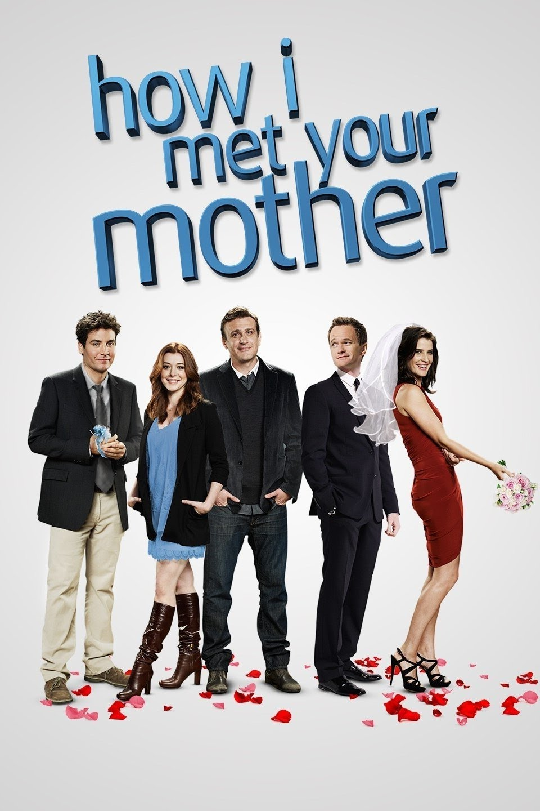

Waarom ik How I Met Your Mother een leuke serie vind.
Ik vind How I Met Your Mother een hele leuke serie omdat het een grappige en vrolijke serie is. Ook leef je echt mee met de hoofdpersonen. Zo zie je hoe Ted uiteindelijk de ware liefde vindt. En hoe Barney een echte relatie krijgt en steeds meer volwassen word. Je ziet ook veel ups and downs in Lily en Marshalls relatie. Ik vind dat de serie goed in elkaar zit en dat er leuke onderwerpen besproken worden. Ook leer je veel van New York omdat ze daar wonen en altijd zijn. Ik vind het einde ook heel leuk omdat ik tijdens de hele serie Robin en Ted een heel leuk stel vond en ze toch nog op het einde bij elkaar komen. Ik vind dat het hele idee van de moeder van de kinderen vinden een goed idee. Maar het had beter uitgevoerd kunnen worden omdat in de eerste 7 seizoenen helemaal niet over haar gesproken wordt en niet je haar niet ziet. Dus ik was eigenlijk al vergeten dat dat het hele idee van de serie was. Als je dan eindelijk de moeder ontmoet in het laatste seizoen gaat ze ook al best snel dood ,aan het eind van het seizoen. Ik denk dus dat ze meer tijd hadden kunnen bestedan aan de moeder in de serie. Ze hadden bijvoorbeeld haar inkomst in de serie kunnen opbouwen. Toch vind ik het een hele leuke serie en zeker een aanrader!
